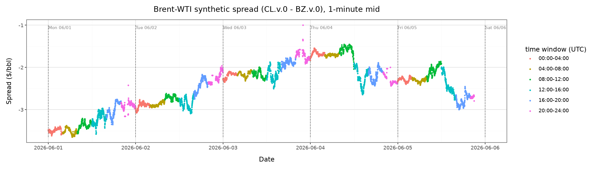
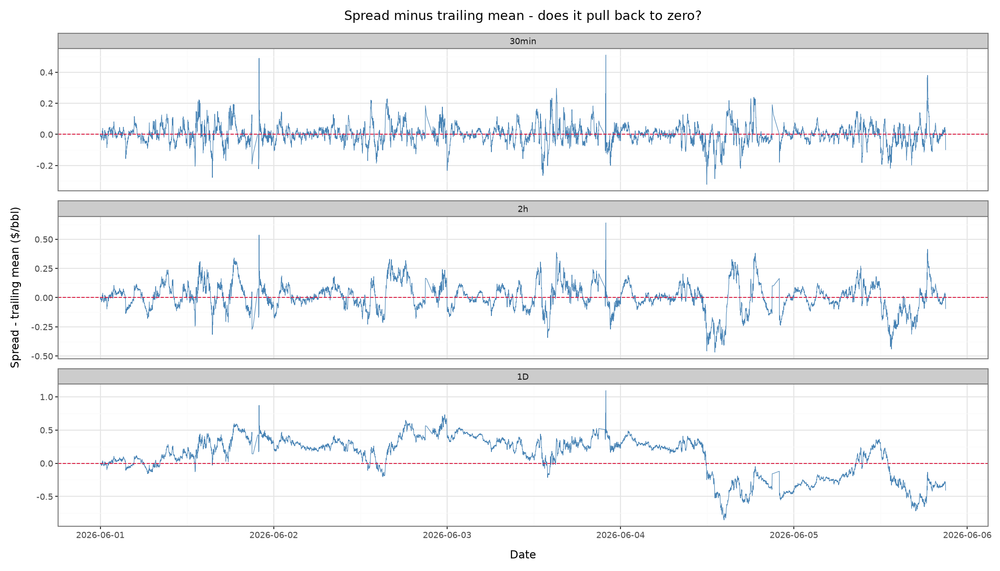
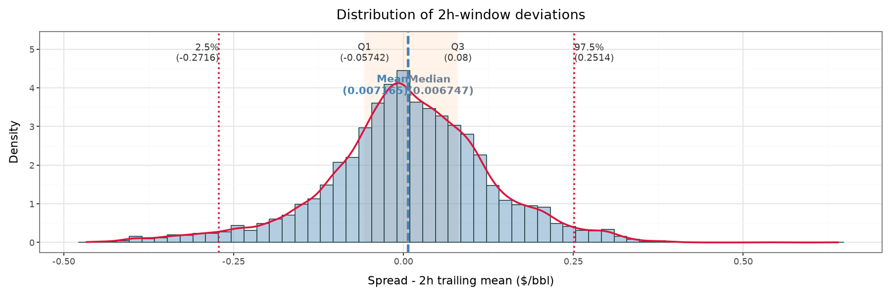
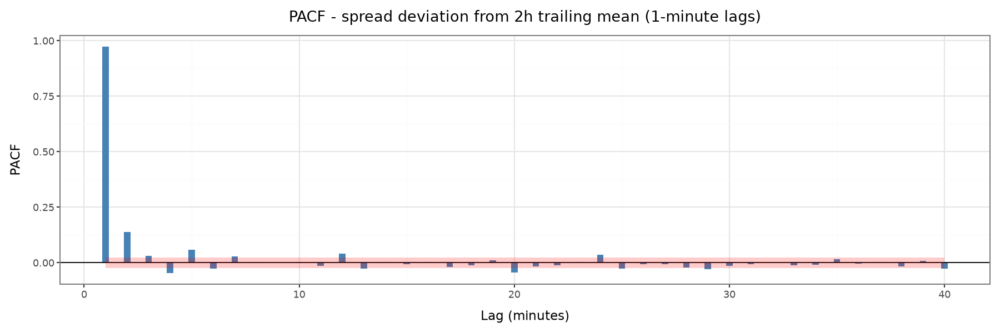
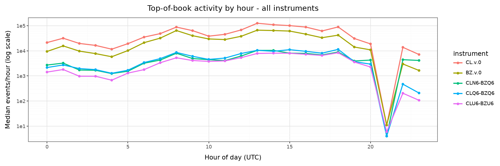
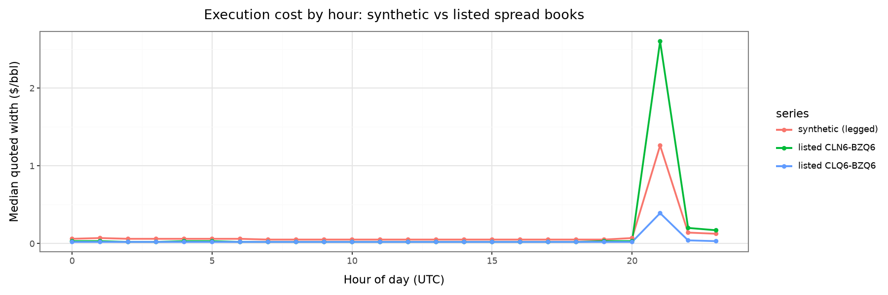

Spread Diagnostics#
Six figures produced by doit spread_diagnostics
(src/plot_spread_diagnostics.py) from the pilot-week aligned dataset. The
question they address: does the spread visually mean-revert, and at what
horizon? The same figures render with narration in the walkthrough notebook.
1. The spread over the week#
Synthetic Brent-WTI spread (CL.v.0 − BZ.v.0), 1-minute mids, colored by
4-hour UTC window; dashed verticals separate calendar days.

2. Deviations from trailing means#
Spread minus its own rolling mean at three horizons (30 min, 2 h, 1 day) — the raw material for any mean-reversion signal.

3. Deviation distribution#
Distribution of 2-hour-window deviations with mean/median and quantile markers — the width of the band a reversion strategy would trade against.

4. Partial autocorrelation#
PACF of the 2-hour deviation series at 1-minute lags — how much of the current deviation is explained by recent history.

5. Activity by hour#
Median top-of-book events per hour of day, per instrument (log scale) — which hours have live books on all legs at once.

6. Execution cost by hour#
Median quoted width of the synthetic spread (crossing both leg books) versus the listed spread instruments’ own books — the comparison that decides which venue a fill model should assume.
